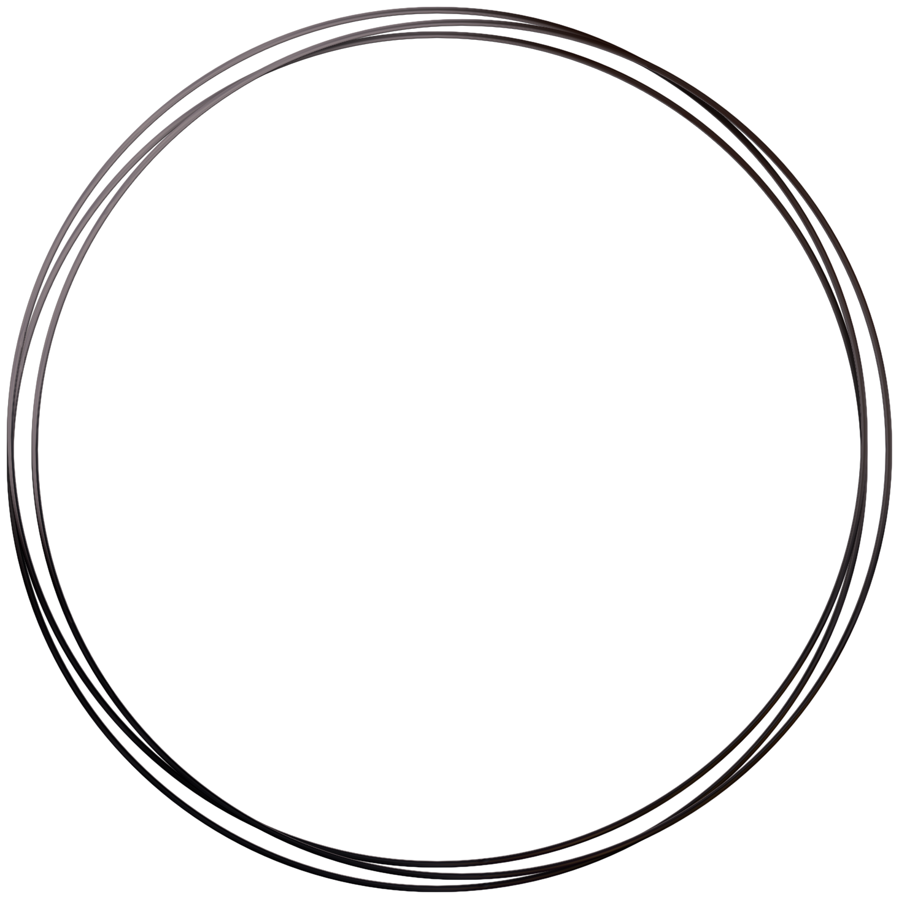

Once upon a time, I started career in STEM with a BSc degree, and went all the way up to my PhD. For several years, I splitted my time between my research and teaching at a local University. As time went on, I developed an interest in programming, taking a couple of courses on Python, hoping to work with computational biology
And then life changed its course, I moved country and thought it was a nice opportunity to change career as well. As I did not feel ready to move into a dev position at the time, my methodical and critical approach made it easy for me to transition to tech as a QA test analyst
Now, I feel it is time to take the next step!
In the early 2000's, I graduated in Biological Science. Then, had the opportunity to go further in my education, and I got my Master's in 2010, and my PhD in 2014.
I came across a piece of software to help identify sandflies species, and it sparkled my interest in applying coding into biology studies. That was then I took my first programming course on Python (and many others after that!)
In 2019, I relocated to England, and COVID-19 came soon after. I used that time to study more and decided to change career. Started an online bootcamp on Web development and quality assurance. And that's how I ended up in the tech industry.
This is the key year: I had the opportunity to do a web development bootcamp offered by Bath Spa University.
Check some of my work: